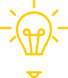

As Light Talks são talks informais, com a duração máxima
de 12 minutos cada. Os speakers
vão falar sobre temas - tech ou não tech - do seu
domínio, que gostavam de partilhar com
os colegas. O objetivo destas Light Talks é criar
momentos para que cada um possa
explorar temáticas do seu interesse e conhecimento.
No escuro não consegues ver. Liga a luz
">


Edição #5
Lisboa | 15 maio 2019


TRUQUES E DICAS DE FINANÇAS PARA QUEM COMEÇOU AGORA A
TRABALHAR
Marcelo Fortunato

DE VOLTA AOS ANOS SESSENTA
Enquanto uma grande parte do mundo beneficia do uso do sistema métrico, alguns hábitos
antigos mantêm-se. Ainda compramos alguns itens em dúzias, ainda dizemos as horas
utilizando valores estranhos. Qual é o motivo de isto acontecer?
PRINCIPAIS MARCOS E FOTÓGRAFOS DA HISTÓRIA DA FOTOGRAFIA
Apesar da árdua tarefa de tentar resumir uma história secular, em apenas 10 minutos de
palestra, este convívio não será mais do que uma conversa unilateral onde o orador
tentará expor os principais marcos da história da fotografia, assim como apresentar os
fotógrafos que mais influenciaram as técnicas e as vertentes fotográficas que conhecemos
na atualidade.
DE CARRINHO PELA CIDADE
Corrimão serve apenas para dar segurança a quem utiliza?
Escada, serve apenas para
passar de
um nível a outro? Para o skatetista, não!
ACERCA DA VERDADE DAS NOTÍCIAS FALSAS
O que são notícias e o que não são notícias. O que é a verdade e o que é a mentira.
Diferenças de verdades, meias verdades, meias mentiras e mentiras. O admirável mundo
novo do boato às redes sociais.
TRUQUES E DICAS DE FINANÇAS PARA QUEM COMEÇOU AGORA A TRABALHAR
Pequenas dicas de finanças para pessoas que estão a começar a trabalhar, desde
alternativas a uma conta poupança a princípios muito básicos de investimento. No fim
desta conversa, esperamos que tenhas mais interesse em saber o que são: inflação,
aforro, raize ou juros compostos.